|
|
Navig.
page/section


_____
|
|
Pages soeurs
I, A propos des liants
II, Bulles, siccativ., struct. élec.
III, Caséine, phosphore, dissociation
IV, Les orbitales
V, L'aérogel
VI, Polarisation de la lumière
VII, Sfumato et diffusion Rayleigh
VIII, Les interférentielles
IX, Dextrine, farine et chiralité
X, L'ocre bleue
XI, Les métamatériaux
XII, Le jaunissement
XIII, Laser etc.
XIV, L'holographie
XV, L'holographie numérique
XVI, Extérieur, intérieur, chaux
XVII, L'électrolyse et les ions
XVIII, L'électricité, un peu plus loin
XIX, Oxydation, métaux
XX, Les échelles
XXI, Nature et évolution des résines
XXII, Le mouillage pigmentaire
XXIII, La molette
XXIV, Blanche neige
XXV, Lumière et matière
XXVI, Magnétisme
XXVII, Ambre et vieilles branches
XXVIII, L'origami miroir
XXIX, Le feu
XXX, Peau du métal
XXXI, La ville en un souffle
XXXII, Oxyder des matériaux
XXXIII, Ocre bleue, une solution
_____
|
Copyright © www.dotapea.com
Tous droits réservés.
Précisions cliquer ici
|
|
| |
|
|
Les dialogues sur la physique-chimie
appliquée aux arts
Chapitre
XXXI
Bellastock
La ville en un souffle |
 |
dial dial
dial
|
Bellastock est une association qui
organise chaque année un festival d'architecture. 2011 est la sixième édition.
Il s'agit à chaque fois d'un défi
impressionnant. Les participants construisent réellement une ville éphémère à
partir d'un choix matériel. Pour exemples la palette (pas celle du peintre) en
2009, le sac de sable en 2010, et cette année « (...) l'architecture gonflable,
une architecture d'air et de "textile", flottante et onirique (...) ». C'est
« Une ville en un souffle », titre de cette manifestation.
|
|
Dotapea :
Ce qui frappe le candide que je suis, en 2011, c'est précisément
l'émergence au niveau international de projets architecturaux ayant
cette dimension flottante et onirique. Par exemple les Floating
Observatories de la future Taiwan Tower de Taichung (images ci-contre),
sortes de bulbes transparents gonflés à l'hélium évoluant au long d'un
genre de tour Eiffel, projet sur lequel nous allons publier un dossier.
Avant d'en venir à la manière dont cette évolution s'inscrit dans
l'histoire de l'art - il y a trop à dire pour une entrée en matière -,
je voudrais aborder les questions pragmatiques, le "Comment ça marche ?". C'est
d'ailleurs le moment de donner le sommaire de cet article qui peut être
lu de manière linéaire ou par accès direct aux différentes approches.
Comment ça
marche ?
Organisation et
intentions
Esthétique, histoire et avenir
Une
digression sous-marine
|
|
|
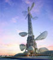
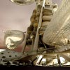
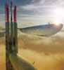
Floating Observatories
Cliquer sur les images
pour les agrandir
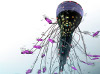
Water-scraper,
Sarly Adre Bin Sarkum |
|
[Comment ça marche ?]
Les observatoires de la tour de Taïwan sont gonflés à l'hélium mais les
cabines sont normalement oxygénées. L'hélium a été envisagé comme
complément respirable dans le cadre d'anciens projets de villes
sous-marines, afin que les habitants supportent la pression ambiante
sans quoi ces ouvrages auraient dû être maintenus à une pression de
surface, ce qui obligeait à les concevoir blindés comme des
bathyscaphes.
Malheureusement, respirer de l'hélium ne s'est pas avéré anodin, ce qui
limite certains projets tout à fait actuels d'habitations sous-marines,
comme le gracieux « Gratte-mer » du Malaisien Sarly Adre Bin Sarkum
(voir en marge ci-contre), mais aussi la possibilité de maintenir une ville
« gonflée en un souffle ».
Comment, sans hélium, avec juste de l'air, allez-vous maintenir gonflée
cette cité, même éphémère ?
Bellastock : Effectivement, Bellastock propose cette année à ses
participants d'ériger une "ville en un souffle", autrement dit une ville
éphémère constituée de micro architectures gonflables réalisées à partir
de PVC souple.
A l'inverse de projets comme les Floating Observatories
de la future Taiwan Tower de Taichung ou le « Gratte-mer » de Sarly Adre Bin Sarkum,
"la ville en un souffle" ne sera pas alimentée par l'hélium qui, en
effet, présente des caractéristiques difficilement gérables pour un
événement de la sorte.
L'air insufflé par une soufflerie électrique suffira à faire tenir "la
ville en un souffle".
Voici comment nous fonctionnerons :
|
|
Deux types de structures seront
présentes : celles en simple membrane, et celles en double membrane
comme indiqué dans le schéma ci-contre.
Il s'agira selon le cas :
- de gonfler les structures en simple
membrane comme on gonfle un ballon,
- ou bien les structures en double membrane verront l'air circuler entre les
deux membranes qui formeront la paroi, mais pas à l'intérieur même de la
structure.
|
|
|
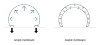
Schéma 1
Cliquer pour agrandir |
|
Dtp : L'assemblage se fait ensuite à
l'aide de cerceaux (voir schéma 2). Les cerceaux, ce sont des sortes de lieux de passage ?
Bellastock :
Absolument.
Le cerceau d'une structure s'insère dans le cerceau d'une autre afin
de :
1/ permettre à l'air de circuler en continu, et donc gonfler et garder
gonflée chaque structure ;
2/ permettre l'accès aux structures.
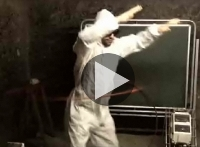
Le système des
cerceaux, vidéo
La pression sera plus forte dans les structures en double membrane car
l'air doit, dans ce cas, être plus comprimé, dans un espace plus réduit
(entre les deux membranes), afin d'assurer la stabilité de la
structures. A l'image d'un chambre à air de vélo.
|
|
|
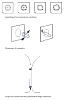
Schéma 2 (format pdf)
Cliquer pour agrandir |
|
Dtp : D'accord.
Comment faites-vous le choix local entre simple et
double membrane ?
Bellastock :
Tout dépend du projet.
Par exemple si un groupe veut faire des arches, il est évident qu'il
vaut mieux opter pour la double membrane.
L'avantage de la double membrane, c'est que la structure sera plus
évidemment modulable (schéma 3 ci-contre).
|
|
|
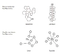
Schéma 3
Cliquer pour agrandir
|
|
Pour insuffler l'air :
- Les structures en double membrane posséderont un système alliant une
gaine et une valve (schéma ci-contre) permettant un accès adéquat à l'air.
- Les structures en simple membrane seront dotées de cerceaux qui se "clipseront"
les uns aux autres assurant la possibilité aux personnes de pénétrer la
structure et l'arrivée constante d'air dans toute la structure.
En effet, une structure en simple membrane nécessite une ouverture plus
grande pour permettre à l'air de l'envahir ; alors qu'en double
membrane, la place réservée à l'air est bien plus restreinte.
|
|
|
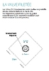
Schéma 4 (format pdf)
Cliquer pour agrandir
D'autres outils sont bien
décrits dans le
dossier d'inscription. |
|
[Organisation et
intentions]
Dtp : Comment organisez-vous les interventions des uns et des autres ?
Le festival met-il à disposition des espaces complètement indépendants
ou bien faut-il tout planifier, comment ça se passe avec les
participants ?
Bellastock :
Les participants nous proposent un projet. On évalue sa faisabilité puis
à l'issue de délibérations plus ou moins longues, ils ont carte blanche
tant en terme de mise en ouvre que de localisation de leur structure sur
le site.
|
|
|
|
|
Comme nous fonctionnons par « lips gates », sources d'alimentation en
air, il leur faut évidemment pouvoir se relier à une autre structure ou
à une « lips gate ». Ce qui indéniablement limite la liberté d'implantation.
Ils ont à charge de s'arranger entre équipes pour se partager l'espace.
Voilà un autre enjeu important du festival. Le « vivre ensemble » est un
leitmotiv du Bellastock. Il sera très intéressant, donc, d'observer de
quelle manière les participants s'approprient le terrain, se le
partagent, afin de pouvoir vivre ensemble.
C'est là qu'intervient la dimension sociologique du projet.
Dtp : D'accord. Bellastock va en effet beaucoup plus loin que ce que
l'on a l'habitude de voir (maquettes, imagerie virtuelle) ! C'est la
mise à l'épreuve en réel de tout un environnement qui se construit.
Y a-t-il eu des précédents avant Bellastock ou parallèlement ?
Pouvez-vous en dire un peu plus sur cette dimension expérimentale ? Par
exemple êtes-vous en train de théoriser tout cela ?
Bellastock :
La notion de ville éphémère est présente depuis le début de Bellastock,
c'est à dire 2006. A taille humaine, il s'agit en effet de penser la
ville de sorte à accueillir l'ensemble des participants. Comme le thème
change chaque année, le matériau de base aussi. La dimension
expérimentale est donc nécessaire pour concrétiser, confirmer la
faisabilité du projet.
Si des prototypes permettent cela, la ville en général reste de l'ordre
de l'expérimental, car les moyens de mise en ouvre sont restreints :
c'est un festival, non un projet financé ou à but lucratif.
De fait, théoriser est compliqué dans la mesure où l'aboutissement de la
ville se compare aisément à un ensemble de prototypes.
La ville éphémère peut par contre largement servir de base à la
réflexion et donc à la théorisation du thème abordé ; ici, l'habitat
gonflable.
Nous nous sommes, qui plus est, déjà basés sur certaines théories pour
imaginer le projet : en effet, à travers ceux de l'architecte Hans
Walter Müller, encore une fois, qui vit dans un gonflable ; ou le projet
du « radeau des cimes » de Gilles Ebersolt.
|
|
|
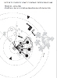
Schéma 5 (format pdf)
Cliquer pour agrandir |
|
Il s'agit d'une structure gonflable posée sur la canopée d'une forêt
pour en étudier l'inexploré jusque là pour des raisons pratiques - En
effet, étudier la faune et la flore à 50 mètres de hauteur, c'est
compliqué ; et le « radeau des cimes », à l'image (de départ) d'un
radeau flottant sur l'eau, vient se poser sur la canopée, permettant aux
chercheurs un accès direct à celle-ci.
Là où la dimension sociologique entre en jeu, c'est pour la question du
vivre ensemble. Elle se fait spontanément et reste de l'ordre de
l'observation extérieure. Il s'agira d'observer la manière dont les
participants, jeunes architectes, se sont appropriés et partagés
l'espace pour l'occuper de sorte à vivre ensemble.
Cette contextualisation directe leur servira sur le plan empathique :
elle les aidera peut-être à se mettre dans la peau de leurs futurs
clients, selon les espaces qui leur seront donnés d'investir.
Une sociologue,
Lynda Bouhitem apportera un regard extérieur de sociologue, en analysant
ces comportements.
Bien que Bellastock cherche à pérenniser l'utilisation de ces micro
architectures en les prêtant pour des événements, festivals, etc., il
n'est, pour le festival, pas question d'ériger des structures
permanentes.
Cependant, nous soulignons que le gonflable de ce type peut être une
solution d'habitat permanent.
A l'image de la maison de l'architecte Hans Walter Müller, parrain du
festival et spécialiste incontesté du gonflable, il est tout à fait
possible qu'une structure soit gonflée en permanence et habitée.
|
|
|
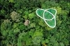
Le radeau des cimes
Cliquer sur l'image
pour visiter le site de l'association en charge de ce projet |
|
Hans Walter Müller a en effet pensé sa maison autour du gonflable : elle
est alimentée en permanence par une soufflerie.
La question de la consommation électrique se pose alors : il faut savoir
qu'une soufflerie consomme la même énergie qu'un système de ventilation
en double flux, utilisé dans une maison lambda.
Dtp : La météo révèle en France certains dangers depuis les années 90.
Les structures gonflables sont-elles plus ou moins fiables que celles
« en dur » devant d'éventuelles menaces météorologiques ?
Bellastock :
Évidemment, le gonflable est plus fragile face aux intempéries.
Le vent est le plus redoutable, en tout cas pour un événement comme « la
ville en un souffle ».
Il s'agit de prendre ses précautions : nous lesterons chaque structure
avec des sacs de sable pour limiter au maximum l'envol.
Dtp : On peut toujours dégonfler... ou plutôt cesser de gonfler. Cela
semble imparable !
Bellastock :
Effectivement, c'est imparable. Cependant il faudra également penser la
ville en fonction des possibles contraintes abordées précédemment. C'est
un défi qui relève complètement de l'organisation des participants.
|
|
|
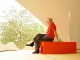
Hans Walter Müller dans
son installation au CIAP de l'île de la Vassivière.
Cliquer pour agrandir
Une intéressante
documentation (dossier enseignants) est disponible sur le site du CRDP
Limousin.
Lien (.pdf). |
|
Ces structures ne seront pas faites pour être exploitées en permanence
ET sur le long terme.
En revanche elles seront assez robustes pour être réutilisées à diverses
occasions (festivals, événements culturels, etc.). C'est d'ailleurs l'un
des objectifs principaux à prendre en considération par les participants
pour la réalisation de leur structure.
Ceci dit, pour citer à nouveau Hans Walter Müller, l'on peut certifier
que le gonflable est apte à nous abriter des aléas météorologiques,
puisque depuis 40 ans, lui et sa femme vivent en pleine forêt dans une
maison gonflable.
En 40 ans, il a juste dû faire face à la tempête de 1999 qui l'a
contraint de changer une partie de la toile qui avait été arrachée.
Dtp : M. Müller décrit ses structures gonflables comme une simple peau
entre l'intérieur et l'extérieur. Comme une peau humaine - et comme tout
édifice finalement -, on peut imaginer qu'il y a de l'entretien et
différentes possibilités de modifier l'apparence. Il faut laver, parfois
soigner (rustines ?), mais on peut aussi éclairer, colorer, voire
instiller des parfums à l'intérieur... Cela semble un « médium »,
finalement, un matériau au même titre que la pierre, le métal, le bois,
le béton, etc., avec ses spécificités.
Déjà, de quoi s'agit-il, de quoi cette « peau » est-elle constituée ?
Et comment comptez-vous la mettre en scène ? Certaines photos, sur votre
site, semblent montrer un grand attachement aux dimensions
esthétiques...
Enfin, pensez-vous qu'il serait un peu ou beaucoup plus difficile de
réaliser une telle ville sous l'eau, à faible profondeur ? Quels
problèmes cela poserait-il ? Et sur l'eau, en surface ?
Bellastock :
Monsieur Müller a en effet cette vision du gonflable. A l'image de tout
autre matériau, la membrane agit selon certains critères qui font
l'essence d'une structure habitable : protection contre les aléas
extérieurs, intimité, etc.
L'avantage du gonflable est en effet son aspect modulable ; pourquoi
pas, oui y diffuser des odeurs, permettre de faire marcher certains
sens.
Pour l'entretien, C'est en effet très « simple ». Des rustines peuvent
servir en cas de fuite, effectivement. Nettoyer se fait facilement avec
de l'eau.
Pour le festival « la ville en un souffle », nous avons opté pour du PVC
de type M1 - norme de sécurité contre le feu -, sous deux déclinaisons :
l'un opalescent, l'autre transparent, pour jouer, selon les envies des
concepteurs, avec les entrées de lumière, etc.
|
|
|
|
|
[Esthétique, histoire
et avenir]
L'aspect esthétique est important, comme pour tout projet architectural.
Il est dans l'esprit de tout architecte de s'adapter à l'environnement
d'implantation, même si l'on en n'a pas toujours l'impression, que
certains projets architecturaux dénotent trop, voire sont moches ! Tout
est question de goût.
Mais l'esthétique prend bien sa place dans un tel projet.
Quant à réaliser une ville gonflable sous l'eau, pourquoi pas. L'enjeu
du Bellastock étant tout autre, ce type de réflexions n'a pas été
abordé. Mais certains projets à priori fous prouvent la faisabilité !
vous abordiez le « Gratte-mer » de Sarly Adre Bin Sarkum. Bien
qu'onéreux, cela semble réalisable ! Rien à voir là avec du gonflable,
mais le gonflable pourrait être une alternative pour exploiter l'océan
comme espace de vie. Il faudrait entamer là un débat qui susciterait
sûrement de vives polémiques.
Dtp : On reproche sans doute à juste
titre au « Gratte-mer » le fait qu'à 50m de profondeur, c'est déjà le
noir complet. Une ville "à la Bellastock" paraît donc ouvrir des
perspectives. Ouvrons une petite parenthèse.
[Digression sous-marine -
Pour passer à la suite cliquer ici]
|
|
|

Instant city,
congrès ICSID Ibiza 1971.
F. Benito, C. Ferrater, J. Prada ©
Cliquer pour agrandir.
|
D'autres projets comme Turbine City, cette fois en surface au large
de la Norvège, ou la Lilypad de Vincent Callebaut ne vont peut-être
pas soulever l'enthousiasme des foules pour des raisons diverses.
Par contre, l'Océan Indien et le Pacifique regorgent d'atolls
naissants ou finissants qui affleurent la surface de l'eau, notamment
des possessions françaises associées à de vastes domaines maritimes.
Sans parler des archipels habités en danger d'inondation comme Tuvalu,
Andaman, Nicobar, les Maldives, .
En avril 2011, la Chine vend 176 îles
inhabitées et un entrepreneur français, Bruno Kerrien, continue à faire
fortune en Russie en vendant lui aussi des îles.
L'occasion d'un mini-dialogue avec
Jean-Louis, physico-chimiste
au CNRS.
Dtp : Que
faire des déchets ? Dans l'espace on sait les recycler intégralement mais cela coûte
extrêmement cher.
Jean-Louis : C'est très exactement un des
problèmes quasi-insolubles.
Et pour les éléments sous-marins tu oublies le coût de l'air
respirable.
Dtp : Ne
pourrait-on pas ajouter une cloison pour emprisonner un peu d'hélium
afin qu'au moins la fonction de gonflage soit assurée ? Le reste ne
serait du coup qu'une climatisation.
Jean-Louis : Tout ce qu'il faut c'est un
gaz sous pression. L'hélium n'ajoute rien.
L'hélium ne supprimera pas la pression. Il a un autre problème, c'est
que quasiment rien n'est étanche à l'hélium. Donc fuites. Et il est
très cher et ce n'est pas une ressource renouvelable.
Ces problèmes de pression sont assez
terribles sous l'océan. Ils sont induits par les marées.
Sous l'eau, la pression est environ de 1
bar + 1 bar tous les 10m. Donc en plongeant de la surface à 10m de
profondeur, on double la pression subie par notre corps. Raison pour
laquelle les accidents à faible profondeur ne sont pas rares [1].
Raison aussi pour laquelle il faut attendre 24h avant de prendre
l'avion après une plongée.
Or un marnage moyen en marée de vive eau
est de 10 à 11m.
Donc une habitation gonflable en milieu
océanique ne va pas sans problèmes. Par contre en méditerranée, près
d'une rivière ou d'un lac, peut-être plus près de la surface, cela paraît possible quoique à étudier attentivement.
Pardon pour cette digression.
|
|
|
Turbine city,
projet de cité faite
d'éoliennes flottantes habitées - 120 000 foyers, 31 500 m2 -
par le cabinet d'architectes On Office (Portugal), pour la côte de
Stavanger, Norvège
Cliquer pour agrandir
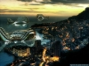
Lilypad,
(nénuphar-habitacle),
Vincent Callebaut
Cliquer pour agrandir
|
|
Dtp : H.W. Müller faisait partie, dans les années 1960, du mouvement de
l'art cinétique. Un autre grand architecte visionnaire, Nicolas
Schöffer, a travaillé en direction d'une architecture gigantesque (cf.
son fameux projet démiurgesque de tour robotique à La Défense),
métallique donc rigide - quoique mouvante - et particulièrement « centralisante »
là où Müller rechercha, par ses gonflables, une « architecture sans
pesanteur », potentiellement itinérante et d'une grande souplesse.
Peut-on donc dire que Müller et Schöffer sont deux « pôles opposés » de
cette branche de l'architecture contemporaine ?
Bellastock : On peut en effet à priori
parler de pôles opposés.
En apparence, entre le gonflable et une structure métallique le débat
n'a pas lieu d'être. Léger contre lourd, mobile contre sédentaire, etc.
Ce qui les oppose est évidemment le choix d'un matériau mais leurs
intentions peuvent se rejoindre, voire se mêler.
|
|
|
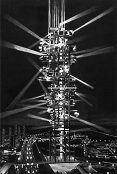
Tour cybernétique
Nicolas Schöffer,
projet pour La Défense,
Paris, 1970 |
|
Le gonflable s'ajoute au dur afin d'équilibrer le tout, comme le projet
du magasin TSUM à Moscou : l'agence d'Axel Schoenert (Paris 1er), en
plus de l'architecture d'intérieur, a érigé une membrane transparente de
3000m² à partir d'un coussin gonflable ETFE, afin de créer une sorte de
verrière abritant le restaurant de l'édifice et offrant une vue
impressionnante de la ville.
C'est là l'exemple que le gonflable s'adapte à une structure fixe et que
l'alliance équilibre les volumes et allège l'architecture.
Schöffer et Müller se rejoignent dans leurs approches architecturales
respectives.
Tous deux inspirés par des pratiques artistiques, ils cherchent
l'esthétique du mouvement.
Müller s'inscrivant dans la mouvance « cinétique », il a beaucoup
travaillé avec des images retranscrites (projetées) de manières très
aléatoires grâce au relief du gonflable.
Schöffer lui, s'intéresse au « cybernétique » : la science des analogies
entre organisme et machines. Dans le projet de la tour robotique,
l'agencement de miroirs mobiles est le résultat d'une réflexion sur
l'esthétique du mouvement directement inspirée de son rapport à la
création artistique.
La polyvalence (urbanisme, architecture, arts plastiques) les rapproche
dans l'appréhension d'un projet architectural, mais le résultat est très
différent.
Dtp : Comment les concepts de Müller ont-il fait surface après tant d'années ?
Bellastock : Dès 1963, Müller remporte
un vif succès avec sa "machine cinétique", cet écran mobile qui
déforme l'image qui y est projetée, utilisant le gonflable.
Si on ne peut parler d'émergence internationale et d'un statut populaire
particulier, on ne peut pas nier que Müller a, depuis ses débuts, marqué
les esprits. Très vite il est invité - ou de sa propre initiative - à
réaliser des projets en gonflables importants : une église de 32 kg
pouvant abriter 200 personnes, par exemple.
Il est d'ailleurs, dans les années 60, lauréat de la biennale de Paris
(1965) et du pavillon allemand à l'exposition internationale de Montréal
(1967).
Dtp : Les cerceaux et, plus globalement, toute la conception modulaire et
articulée permettant la construction d'une véritable ville, est-ce une
invention de H.W. Müller ou bien de Bellastock ? Müller avait-il
initialement cette « vision d'ensemble » ?
Bellastock : L'idée des cerceaux est
née d'une réflexion commune entre les fondateurs de Bellastock et des
intervenants extérieurs, amis, etc.
Il s'agissait de limiter la présence des souffleries, nécessaires pour
gonfler les structures.
Les souffleries étant coûteuses, bruyantes et encombrantes, Bellastock
ne pouvait pas se permettre d'en proposer une par structure, sachant
qu'elles seront plus de 170 sur le site.
Connecter les structures pour faire circuler l'air était donc la
solution la plus plausible. S'imposant, cette idée a poussé l'équipe à
réfléchir sur « comment connecter ces structures » de manière
« solide » ?
Le cerceau est une solution pratique : peu coûteux et permettant, en
plus de la circulation de l'air, le passage des personnes d'une
structure à l'autre.
Cette vision d'ensemble, de « ville éphémère », est le propre de
Bellastock, ce depuis 2006. Hans Walter Müller nous a permis de
confirmer sa faisabilité, de par son expérience du gonflable et suite à
de précieux conseils quant à la manipulation du PVC pour optimiser la
conception.
Dtp : Bravo
et bonne chance pour cette édition 2011. Une dernière question :
pourquoi ce nom, Bellastock ?
Bellastock : L'association est née de
l'envie commune d'anciens étudiants de l'école d'architecture ENSA de
Belleville, Grégoire Saurel, Antoine Aubinais et Baptiste Furic.
L'école disposait d'une association étudiante, Bellasso, et les
fondateurs ont pensé à une contraction de Belleville et de Woodstock,
référence historique dans le panorama des festivals. Ca a donné
Bellastock.
Si le sérieux est de rigueur dans la conception du projet Bellastock, la
dimension « Woodstock » y est bien présente : convivialité, partage,
réflexion commune, nature, vivre ensemble, fête..
Dtp :
Merci !
Pour toute information, voir le site
Bellastock.com
_____
[1] Physiologie
du sport : bases physiologiques des activités physiques et sportives,
Hugues Monod, Henry Vandewalle, Roland Flandrois, Masson 2007, Paris, p.
207.
Pour retourner au corps du texte,
cliquez sur le bouton "Précédent" de votre navigateur
|
|
|
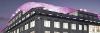
Projet pour le magasin
Tsum, Moscou
Cliquer pour agrandir
L'ETFE (éthylène
tétrafluoréthylène) est un polymère léger et très transparent |
|
Chapitre suivant |
Retour
début de page
|
|

 Communication
Communication
|
|


{kind=link}
{kind=link}
{kind=link}
{kind=link}